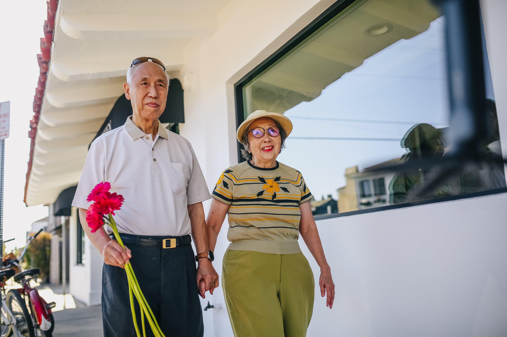
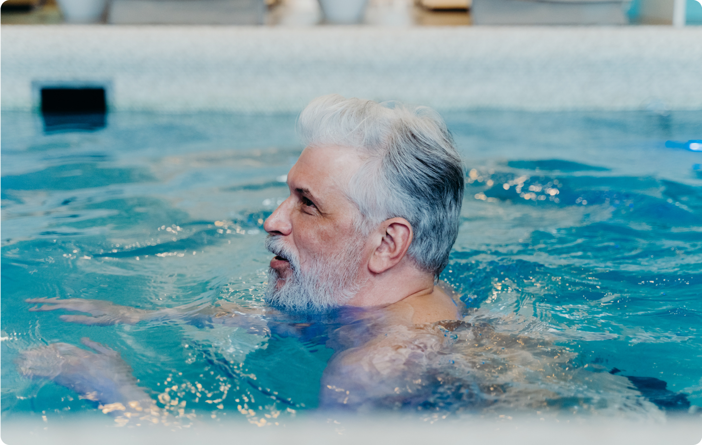
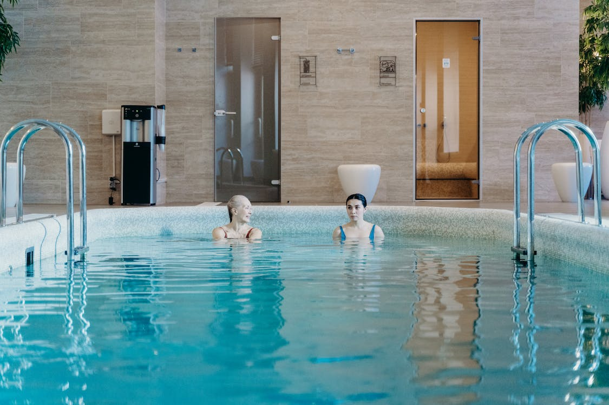
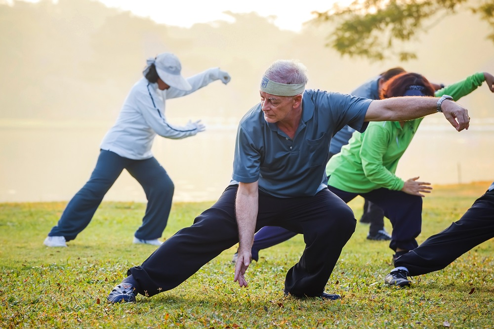

Praticar ioga é uma decisão que traz inúmeros benefícios para o corpo e a mente. Ao se entregar a essa prática milenar, você encontrará um refúgio de paz e equilíbrio em meio à agitação do cotidiano.

A caminhada é um forma simples e acessível de exercício físico que traz uma série de benefícios para a saúde. Além de ser uma atividade de baixo impacto, ela pode ser praticada por pessoas de todas as idades e níveis de condicionamento físico. A caminhada também é uma ótima maneira de aliviar o estresse e melhorar o humor, uma vez que libera endorfinas, os hormônios responsáveis pela sensação de bem-estar. Portanto, não há desculpas para não praticar esse esporte tão benéfico para o corpo e a mente.
Se você ainda não está convencido(a) de praticar a caminhada, considere também que ela pode ser uma atividade social. Convidar um amigo ou familiar para caminhar junto com você pode tornar o exercício mais divertido e motivador. Vocês podem explorar diferentes locais, como parques ou praias, e aproveitar o tempo juntos enquanto cuidam da saúde. Além disso, a caminhada pode ser adaptada de acordo com suas preferências e necessidades. Você pode escolher o ritmo, a duração e o terreno que mais lhe agradam. Você só precisa de um tênis confortável! 
A natação é uma atividade de baixo impacto, o que a torna ideal para pessoas de todas as idades e condições físicas, inclusive para aqueles que buscam reabilitação de lesões. A água proporciona uma sensação de leveza e suporte, reduzindo a tensão nas articulações. Além dos benefícios físicos, a natação também é uma ótima maneira de relaxar e aliviar o estresse. A imersão na água cria um ambiente tranquilo, onde você pode se desconectar do mundo exterior e focar na sua técnica e respiração.
Além dos aspectos físicos e emocionais, a natação promove uma sensação de comunidade e socialização. Muitas vezes, as piscinas se tornam espaços de encontro, onde pessoas de diferentes idades e origens se reúnem para compartilhar a paixão pela natação. Essa interação social não apenas torna o exercício mais agradável, mas também cria um ambiente de apoio mútuo. A troca de experiências e dicas entre nadadores pode incentivar a melhoria constante das habilidades individuais, além de proporcionar um senso de pertencimento a uma comunidade que valoriza a saúde e o bem-estar. A natação, assim, transcende os benefícios físicos e se torna uma jornada que une pessoas através de uma atividade enriquecedora e prazerosa.


Praticar ioga é uma decisão que traz inúmeros benefícios para o corpo e a mente. Ao se entregar a essa prática milenar, você encontrará um refúgio de paz e equilíbrio em meio à agitação do cotidiano.
Através das posturas, respirações e meditações, a ioga promove o fortalecimento físico, a flexibilidade, o alívio do estresse e a melhoria da concentração. Desperte o seu eu interior, conecte-se com a sua essência e experimente uma jornada de autoconhecimento e bem-estar. Faça ioga e permita-se florescer em todos os aspectos da sua vida.
O Tai Chi é crucial para a inclusão dos idosos nos esportes, pois oferece uma prática de baixo impacto que melhora o equilíbrio, a flexibilidade e a força, tornando-a acessível para pessoas de todas as idades. Além disso, promove a socialização e o bem-estar emocional, contribuindo para uma participação ativa na vida esportiva, independentemente da idade.
Os idosos podem praticar o Tai-chi confortavelmente com roupas leves e calçados confortáveis, mas descalços ou com sapatilhas de sola fina também são comuns. Um espaço tranquilo e amplo é suficiente para realizar os movimentos suaves, tornando-o uma atividade acessível e de baixo custo para a inclusão dos idosos nos esportes.
